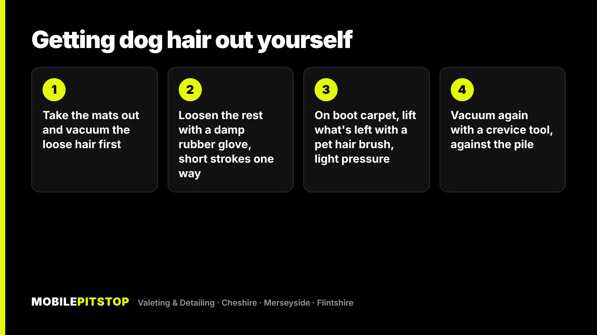
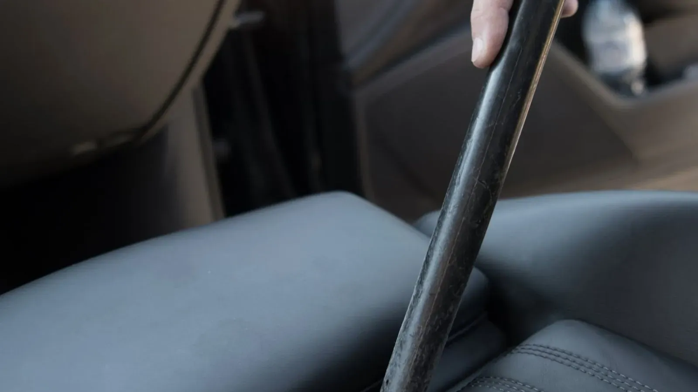

Dog hair doesn't just sit on car carpet. It works its way into the fibres, which is why a hoover on its own leaves so much behind. The fix is to loosen the hair first and vacuum it out second.
At home, a damp rubber glove, a pet hair brush and a vacuum with a crevice tool will get most of it out. It's slow work, though, and some hair needs more than that: hair packed into seat seams, matted with mud, or coming with a smell. Below is what works, where DIY runs out, and how we deal with it on our jobs.
Why dog hair is so hard to get out of a car
Short, coarse dog hairs behave like tiny needles. Every time your dog shifts about in the boot, the hairs get pushed point-first into the carpet. They hook into the loops, and static from the fabric holds them there.
A vacuum pulls air, and air flows around a hair that's woven in rather than lifting it out. That's why you can hoover the same patch three times and still see hair.
The worst places are almost always the same:
The boot lining. That fuzzy, felt-like carpet on the boot floor and sides grips hair harder than anything else in the car.
Seat seams and stitching. Hair gathers in the grooves where panels of fabric meet.
Seat rails and under the seats. Hair mixes with grit and crumbs and packs down.
Around seatbelt buckles and door pockets, where it's hard to get a nozzle in.
The photo at the top of this page is a boot lining from one of our jobs. The "before" side had already been hoovered more than once.
How to get dog hair out of your car yourself
You don't need special kit to make a real difference. Work in this order. Loosening the hair before you vacuum is what makes it work.
Take everything out. Remove the mats, any boot liner and the dog's blanket. Shake the mats outside and give them a firm brush.
Vacuum the loose hair first. This gets rid of the easy hair and the grit, so you're not grinding sand into the carpet in the next step.
Loosen the rest with rubber. A slightly damp rubber washing-up glove, a rubber pet brush or a window squeegee all do the same job. Use short strokes in one direction, and the hair rolls up into clumps you can pick off.
Use a pet hair brush on the boot lining. For felt-like boot carpet, a stiff pet hair brush or a pet hair "stone" lifts what rubber can't. Test it on a hidden patch first and keep the pressure light. Some of these are abrasive and can rough up the fibres. Don't use them on seats.
Vacuum again with a crevice tool, working against the direction of the pile, along seams and edges.

Fabric seats vs leather seats
Fabric seats: the damp rubber glove is your best friend. Finish with a lint roller on the bolsters and headrests. Go gently on suede-effect or Alcantara-style panels, because rubbing hard flattens and marks them.
Leather seats: hair can't weave into leather, so it wipes off with a damp microfibre cloth. The bits you'll fight are in the stitching and the gap between the seat base and backrest, where a crevice tool does the work.
When doing it yourself stops working
The rubber-glove method works well on a car that's cleaned regularly. It struggles in a few situations:
Months of build-up. When hair has been driven into the boot carpet trip after trip, it's packed in layers, and getting it out by hand can take an afternoon.
Hair mixed with mud, sand or damp. Wet hair mats together and dries onto the carpet. The beach and muddy walks make this much worse.
A doggy smell. The smell mostly comes from oils and dirt the coat leaves in the fabric, not from the hair itself. Removing every hair won't fix it. The fabric needs cleaning.
Hair you can't reach. Seat rails, under the seats, between the seats and the centre console, and inside the seat seams.
How we remove dog hair on our jobs
Dog hair is a normal part of an Interior Deep Clean, and we do it at your home or workplace. The difference is mostly method and tools:
Compressed air first. We blow out the seat rails, joins, vents and seams, because that's where hair and grit hide. Everything comes out into the open before the vacuum goes near it.
Agitation by hand. Brushes and rubber tools work the hair out of the carpet, seams and edges, panel by panel.
A deep vacuum of the seats, carpets, mats and boot, right into the edges.
Steam on the contact areas to lift grime and sanitise the surfaces you and your passengers touch.

The gap between the seat and the console is where hair and crumbs collect.
If the car is heavily coated, we add the severe pet hair option to the Interior Deep Clean. It covers the extra time this takes, so we don't have to rush the job.
If there's a smell, or the seats and carpets are marked, the hair is only half the job. An In & Out Deep Clean includes steam, shampoo and extraction of the seats, carpets, mats and boot, which takes the dirt and oils out of the fabric. For a smell that keeps coming back, our odour removal treats the cause rather than covering it.
Not sure which one your car needs? Send us a few photos in daylight. We'll tell you straight, including when the cheaper option will do.
Keeping dog hair under control between cleans
Use a boot liner or a washable blanket. It's far easier to wash a blanket than to pull hair out of carpet.
Fit a seat cover or hammock if your dog rides on the back seat.
Brush your dog before a long trip, especially when they're shedding.
Do a weekly two-minute pass with a damp rubber glove. Little and often stops hair getting driven deep into the fibres.
Keep a lint roller in the door pocket for the seats.
Done regularly, this keeps a dog-friendly car in decent shape. When it gets away from you, a proper interior clean gets it back to a starting point you can maintain.